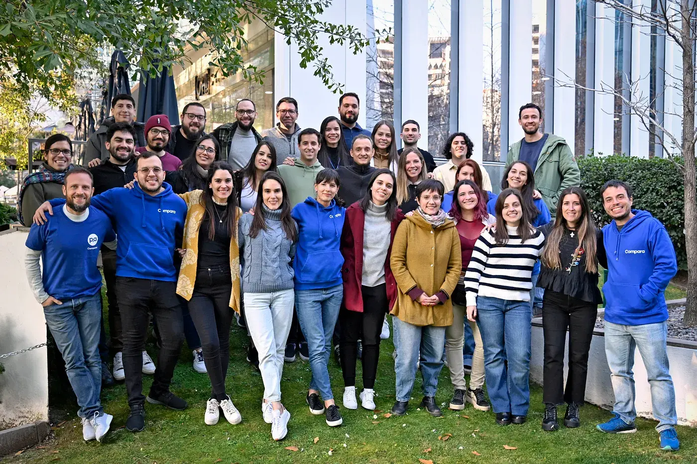

De Honduras a Chile, sin escalas
Bueno...si hubo escalas
Bueno...si hubo escalas

Ella es Eunice, es de Honduras y trabaja en Compara hace casi 3 años.
Hace unas semanas viajó 5637 km hasta Chile para encontrarse con sus compañeros, que nunca había visto en persona. No solo una aventura laboral, sino también una experiencia que anotará en su diario íntimo, si es que lo tiene.
Luego de viajar 12 horas, pasar 3 aeropuertos y 2 vuelos, nuestra Comparadora llegó a las tierras del pisco. Con la particularidad de que era una de las semanas más frías del año. Pasó de 29 grados a 2. Gracias a una de sus compamigas pudo estar abrigada a la altura del frío precordillerano. Hermoso recibimiento para nuestra centroamericana.
Pero todo esto tiene un inicio hace 3 años cuando ella aplica mediante un portal web a un puesto en Compara. Supo desde el primer momento que su lugar era aquí. No lo decimos nosotros, sino que ella nos lo contó así:
Fue la primera oferta (y sería la única) que vi y apliqué (amor a primera vista, jaja). Compara se contactó conmigo y desde la primera entrevista con Lili quise trabajar aquí, por la cultura de la empresa y sobre todo las personas que la integran.
Nos haces emocionar, Eunice, gracias.
Fueron 3 días de trabajo en donde se cruzaban las ganas de conocer más a todos y el de hacer lo mejor por Compara. ¿Y saben qué? ¡Lo logró!
Escuchar a Eunice hablar de su experiencia vivida, es mágico. Para que nos crean, les dejamos textual sus palabras:
“Fue como trabajar en Zoom, pero con mucho plus incorporado. Todos son profesionales y personas increíbles, abiertas a ayudar y pensar en conjunto para resolver problemas.
Al final del viaje volvimos todos motivados y creo que esa reunión presencial hizo muy evidente ver dónde tenemos que trabajar/mejorar este Q(uarter). Mi pensamiento al despedirme del grupo y mientras iba al aeropuerto era: ojalá repetirlo."
No solo quedó maravillada por lo conseguido laboralmente, también de la ciudad que la acogió. Encontró en Santiago paisajes bellísimos, una ciudad con una arquitectura “especial”, como la definió en su relato, y la seguridad de caminar tranquila por las calles de esta capital.

Gracias, Eunice, por vivir esta experiencia Compara y compartirnos tus historias. Te esperamos pronto por Chile.
 Actualidad
ActualidadEl recordado programa noventero “Venga Conmigo” marcó a toda una generación en Chile. Su exitoso segmento “Corazones Service” se transformó…
 Actualidad
ActualidadHace aproximadamente 2 meses comenzamos con el cierre de lo que empezó en julio como el “Compariniverse”.
 Actualidad
ActualidadHace unos meses lanzamos Compariniverse: la primera campaña en Chile protagonizada por una celebridad completamente clonada con IA.